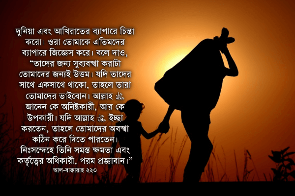
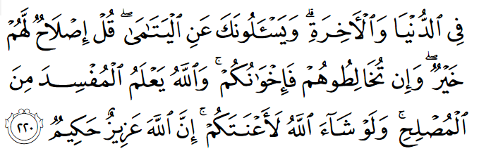

আমাদের যাদের ছোট বাচ্চা আছে, তারা জানি দিনের মধ্যে কতবার তারা বাবা-মাকে ডাকে। বাবা-মা কিছুক্ষণের জন্য চোখের আড়াল হলেই তারা অস্থির হয়ে ‘বাবা! মা!’ ডাকাডাকি শুরু করে। আর আজকের নিষ্ঠুর সমাজে অল্প বয়সে বাবা-মা হারিয়ে ফেলা একটি ছোট বাচ্চা একা কীভাবে বেঁচে থাকে, কী খায়, কোথায় ঘুমায়, জ্বর হলে কে তাকে মাথায় পানি ঢেলে দেয়, কে তাকে কোলে নিয়ে হাঁটে —এগুলো নিয়ে আমরা কতখানি ভাবি? সারাদিন আমাদের মনের কোনায় চিন্তা চলতে থাকে: নিজের বাচ্চাকে কী খাওয়াবো, কখন ঘুম পাড়াবো, কোথায় পড়াবো, কোথায় ঘুরতে নিয়ে যাবো, কী কিনে দেবো — আর ওদিকে লক্ষ লক্ষ ছোট বাচ্চারা বাবা-মা ছাড়া একা বড় হচ্ছে চরম অবহেলা, অনাদরে, মানুষের নিষ্ঠুর ব্যবহার সহ্য করে।
মানুষের জন্য কল্যাণ করা ইসলামের মূলভিত্তিগুলোর একটি। কু’রআনে আল্লাহ تعالى বহু আয়াতে বহুভাবে আমাদেরকে বলেছেন যে, শুধু নামাজ, রোজা, হাজ্জ ইত্যাদি ধর্মীয় রীতিনীতিগুলো পালন করলেই হবে না, একইসাথে আমাদেরকে মানুষের জন্য কাজ করতে হবে, সামাজিক, নৈতিক দায়িত্বগুলো পালন করতে হবে। এতিমদের কথা কু’রআনে বহুবার এসেছে, কারণ আল্লাহর تعالى কাছে এতিমদের গুরুত্ব অনেক বেশি। বাবা-মা হারিয়ে ফেলা এতিমের থেকে বেশি আর কেউ আমাদের সামাজিক সেবার দাবীদার হতে পারে না। এতিমদের প্রতি মুসলিমদের দায়িত্ব কতখানি, কীভাবে সেই দায়িত্ব পালন করতে হবে, করার পুরষ্কার এবং না করার শাস্তি সম্পর্কে আমাদের বহুবার সাবধান করে দেওয়া হয়েছে। এরকম একটি আয়াত হলো—


দুনিয়া এবং আখিরাতের ব্যাপারে চিন্তা করো। ওরা তোমাকে এতিমদের ব্যাপারে জিজ্ঞেস করে। বলে দাও, “তাদের জন্য সুব্যবস্থা করাটা তোমাদের জন্যই উত্তম। যদি তাদের সাথে একসাথে থাকো, তাহলে তারা তোমাদের ভাইবোন। আল্লাহ জানেন কে অনিষ্টকারী, আর কে উপকারী। যদি আল্লাহ ইচ্ছা করতেন, তাহলে তোমাদের অবস্থা কঠিন করে দিতে পারতেন। নিঃসন্দেহে তিনি সমস্ত ক্ষমতা এবং কর্তৃত্বের অধিকারী, পরম প্রজ্ঞাবান।” [আল-বাক্বারাহ ২২০]
তাদের জন্য সুব্যবস্থা করাটা তোমাদের জন্যই উত্তম
এতিমদের জন্য সুব্যবস্থা না করলে, তাদের দায়িত্ব না নিলে কী ভয়াবহ পরিণাম হয় তা আমরা আজকে খবরের কাগজ খুললেই দেখতে পাই। একদল অসাধু পশু এতিমদের ধরে নিয়ে গিয়ে তাদের অঙ্গ বিক্রি করে পঙ্গু করে দেয়। আরেকদিকে অসাধু কিছু নেতা এতিমদের ধরে নিয়ে গিয়ে ট্রেনিং দিয়ে ক্যাডার, মস্তান, খুনি বানিয়ে ফেলে। আরেকদল অসাধু নেতা এতিমদের মগজ ধোলাই করে তাদেরকে ইসলামি সন্ত্রাসী শিখিয়ে কোপাকুপির জন্য ব্যবহার করে। যেই এতিমদেরকে আমাদের জনশক্তি বানানোর কথা, সেই এতিমরা হয়ে যায় জনশত্রু।
আল্লাহ تعالى আমাদেরকে এতিমদের সাথে إِصْلَاح ইসলাহ করতে বলেছেন। ইসলাহ অর্থ ভুল জিনিসকে ঠিক করা, ভেঙ্গে পড়া কিছুকে আবার জোড়া লাগানো, দুই পক্ষের মধ্যে শান্তি প্রতিষ্ঠা করা।[৫] যারা ইসলাহ করে, তারা হচ্ছেন মুসলিহুন مُصْلِحُونَ — আল্লাহর تعالى দৃষ্টিতে উঁচু পর্যায়ের সম্মানের অধিকারী, জান্নাতে যাওয়ার যোগ্য মানুষ।
যদি তাদের সাথে একসাথে থাকো, তাহলে তারা তোমাদের ভাইবোন
আমাদের কারো উপর যদি দায়িত্ব পড়ে এতিমদের দেখাশুনা করার, তাহলে তাদের দৈনন্দিন জীবনের কাজকর্ম, থাকা, খাওয়া ইত্যাদি আমাদের পরিবারের সাথে একসাথে হলে, তাদেরকে আমাদের ভাইবোন হিসেবে দেখতে হবে। তারা উত্তরাধিকার হিসেবে যে সম্পত্তি নিয়ে আসবে, সেটা আমাদের সম্পত্তির সাথে মিশে যেতে পারে। বিশেষ করে এতিমদের খরচ যোগাতে তাদের নিজেদের সম্পত্তি ব্যবহার করার প্রয়োজন হতে পারে। তখন অনেক সময় কু’রআনে এতিমদের সম্পত্তির উপর অন্যায়ভাবে হাত না দেওয়া কঠিন নির্দেশগুলো পড়ে ভয় পেয়ে, অনেকেই এতিমদের আলাদা করে রাখেন। নিজের পরিবারের মধ্যে এতিমদেরকে আনতে চান না। এক্ষেত্রে আল্লাহ تعالى আমাদেরকে মধ্যমপস্থা নিতে বলেছেন। আল্লাহ تعالى আমাদেরকে বলছেন, তারা যদি আমাদের নিজেদের ভাইবোন হতো, তাহলে আমরা যা করতাম, সেটাই করবো। আল্লাহ تعالى জানেন কে ইচ্ছা করে খারাপ কাজ করে, আর কার ভুল হয়ে যায়।
আল্লাহ تعالى জানেন কে অনিষ্টকারী, আর কে উপকারী
আল্লাহ تعالى জানেন কে مُفْسِد মুফসিদ অর্থাৎ ফাসাদ করে, আর কে মুসলিহ অর্থাৎ ইসলাহ করে। ফাসাদ একটি গুরুত্বপূর্ণ শব্দ এবং কু’রআনে ৫০ বার এই শব্দটি বিভিন্ন রূপে পাবেন। এর অর্থ ব্যাপক[৫]—
১) দুর্নীতি, ক্ষয়ক্ষতি করা: যেমন, এতিমের সম্পত্তি নিজের নামে লিখে নেওয়া। অনেক সময় এতিমদেরকে ভয় দেখিয়ে, বা তাদেরকে না জানিয়ে তাদের সম্পত্তি দখল করা।
২) অপকার, অনিষ্ট করা: যেমন, এতিমের জমি আছে দেখে হিংসায় জ্বলে সেই জমি নষ্ট করে ফেলা।
৩) বিশৃঙ্খলা, অরাজকতা সৃষ্টি: যেমন, কোনো এতিমখানার নামে ইসলামি সন্ত্রাসীর কালিমা লাগিয়ে সেই এতিমখানার পরিচালকদের জীবন কঠিন করে দেওয়া, এতিমদের জন্য ফান্ড বন্ধ করে দেওয়া।
৪) শারীরিক ক্ষতি করা: যেমন, এতিমদের মারধোর করা। এতিমখানায় এতিমদের উপর শারীরিক নির্যাতন করা। তাদের শারীরিক বিকৃতি করা। তাদের অঙ্গ বিক্রি করে দেওয়া।
এক কথায় ফাসাদ হলো, যে কোনো কাজের বা বস্তুর স্বাভাবিকতা নষ্ট করা। ফাসাদের ব্যাপারে আল্লাহর تعالى কঠোর নিষেধাজ্ঞার কারণ হলো, ফাসাদ যে সেক্টরে ঢুকে, সেটার স্বাভাবিকতা নষ্ট করে দেয়। শিক্ষাখাতে ফাসাদ ঢুকলে সেখান থেকে মুর্খরা ‘শিক্ষিতের’ তকমা লাগিয়ে বের হয়। বিচারখাতে ফাসাদ ঢুকলে ন্যায়বিচার ব্যহত হয়। নিরাপত্তাবাহিনীতে ফাসাদ ঢুকলে নিরাপত্তা বিঘ্নিত হয়। মিডিয়ায় ফাসাদ ঢুকলে তা জনগণের মেধা-মননের প্রকৃতত্ব নষ্ট করে।
যারা এতিমদের সাথে ফাসাদে লিপ্ত, তারা সাবধান, কারণ—
যদি আল্লাহ تعالى ইচ্ছা করতেন, তাহলে তোমাদের অবস্থা কঠিন করে দিতে পারতেন
এই অংশটি ভয়ঙ্কর। আমরা যখন এতিমদেরকে দেখি, তখন নিজেদেরকে প্রশ্ন করা দরকার: আজকে যদি আমরা তাদের জায়গায় থাকতাম, তাহলে আমার জীবনটা কেমন হতো? আল্লাহ تعالى ইচ্ছা করলেই তাকে এতিম না বানিয়ে, আমাকে এতিম বানিয়ে দিতে পারতেন। তাকে পথে না বসিয়ে আমাকে পথে বসাতে পারতেন। সে যত অন্যায়, দুর্ব্যবহার সহ্য করে বড় হচ্ছে, যত কষ্ট সহ্য করছে, সেই কষ্টগুলো আমিও পেতে পারতাম। তখন আমার কেমন লাগতো? তখন আমি বাবা-মা’কে আর একটিবার দেখতে পাওয়া জন্য, আর একটিবার তাদের স্পর্শের জন্য কতটা হাহাকার করতাম? সারাদিন মানুষের কাছে কষ্ট পেয়ে আমার কি একটু ইচ্ছা করতো না কারো বুকে মাথা রেখে কিছুক্ষণ কাঁদি? আমার কী ইচ্ছা করতো না রাতে বিছানায় একা একা শুয়ে না থেকে, কাউকে জড়িয়ে ধরে একটু ঘুমাই? — আল্লাহ تعالى ইচ্ছা করলে আমার জীবনটাকেও কঠিন করে দিতে পারতেন। কিন্তু তিনি করেননি। তার জন্য আমি তাঁকে কতটা কৃতজ্ঞতা দেখাচ্ছি?
নিঃসন্দেহে তিনি সমস্ত ক্ষমতা এবং কর্তৃত্বের অধিকারী, পরম প্রজ্ঞাবান
এখানে আমরা আল্লাহর تعالى দুটো গুণের কথা জানবো— ১) ٱلْعَزِيز আল-আজিজ, ২) ٱلْحَكِيم আল-হাকিম।
১) ٱلْعَزِيز আল-আজিজ হচ্ছে যার ক্ষমতা এবং কর্তৃত্ব দুটোই রয়েছে। কারও অনেক ক্ষমতা থাকতে পারে, কিন্তু তার যদি কোনো কর্তৃত্ব না থাকে, তাহলে সে তার ক্ষমতা কাজে লাগাতে পারবে না।[১] যেমন, পুলিশ বাহিনী। তাদের যথেষ্ট ক্ষমতা। কিন্তু তাদের কর্তৃত্ব খুবই কম। একারণে ক্যাডাররা তাদের নাকের ডগা দিয়ে যা খুশি করে যেতে পারে, কিন্তু তারা কিছুই করতে পারে না।
আবার কারও অনেক কর্তৃত্ব থাকতে পারে, কিন্তু যদি ক্ষমতা না থাকে, তাহলে সে তার কর্তৃত্ব খাঁটাতে পারবে না। যেমন, কোনো দেশের প্রেসিডেন্ট। তার যথেষ্ট কর্তৃত্ব। কিন্তু তার ক্ষমতা খুবই কম। তাই কর্তৃত্ব থাকা সত্ত্বেও সে কিছুই করতে পারছে না। সেই দেশের প্রধানমন্ত্রী তার বিশাল ক্ষমতা নিয়ে যা করার করে যাচ্ছে।
আল্লাহ تعالى হচ্ছেন আল-আজিজ: সমস্ত ক্ষমতা তাঁর এবং সেই ক্ষমতা যখন, যেভাবে খুশি ব্যবহার করার সমস্ত কর্তৃত্ব তাঁর হাতে। কেউ তাঁকে কিছুই বলতে পারে না। তিনি আজকে আপনাকে সকাল বেলা ভরপেট নাস্তা খেয়ে, সারাদিন সুস্থ হয়ে চলাফেরা করে, রাতে নরম বিছানায় শুয়ে ঘুমাতে দিতে পারেন। আবার কালকেই তিনি আপনাকে দুর্ঘটনায় পঙ্গু করে দিয়ে, হাসপাতালে আইসিইউ-তে রেখে, সারারাত ব্যাথায় চিৎকার করাতে পারেন। সমস্ত ক্ষমতা এবং কর্তৃত্ব তাঁর।
২) ٱلْحَكِيم হাকিম: পরম প্রজ্ঞাবান। আল্লাহ تعالى যখন আমাদের জীবনে কিছু করেন, তিনি তাঁর অসীম প্রজ্ঞা দিয়ে সেটা করেন। সেটা আমরা বুঝতে পারি, আর নাই পারি। হয়তো তিনি تعالى যখন কাউকে কাউকে পথে বসিয়ে দেন, তিনি تعالى সেটা করেন কারণ তিনি تعالى জানেন: যখন সে আবার মাথা তুলে দাঁড়াবে, তখন সে সম্পদের মূল্য বুঝবে, গরিবদের কষ্ট বুঝবে, অহংকার কম করবে, সবসময় শুধু নিজের এবং নিজের পরিবারের কথা না ভেবে আত্মীয়স্বজন, পাড়ার গরিবদের জন্য কিছু করবে।
হয়তো তিনি تعالى যখন কারও আপনজনকে নিয়ে যান, তিনি تعالى জানেন সেই আপনজনকে হারিয়ে সে মানসিকভাবে আরও শক্ত হবে, জীবনযুদ্ধ শক্ত হাতে মোকাবেলা করবে, নিজে জয়ী হবে, অন্যকে জয়ী হতে সাহায্য করবে।
আবার হয়তো তিনি تعالى যখন কাউকে কঠিন অসুখ দিয়ে বিছানায় ফেলে রাখেন, তিনি تعالى জানেন তার এই অসুখ তার পরিবারের মানুষগুলোকে একসাথে করে দেবে। পরিবারের সদস্যরা যে যার মতো দূরে সরে না গিয়ে, আরও কাছাকাছি হবে। একে অন্যকে সান্ত্বনা দেবে। একে অন্যের বিপদে পাশে থাকবে। তাদের বংশধরদের মধ্যে পারিবারিক বন্ধন আরও শক্ত হবে। অসুস্থ মানুষটাকে কেন্দ্র করে পরিবারের দুই-তিন প্রজন্ম একসাথে থাকবে। অসুস্থ মানুষটাকে দেখে তারা নিজেরা নিজেদের সুস্থতার মূল্য বুঝবে, আল্লাহর تعالى প্রতি আরও কৃতজ্ঞ হবে। এই কৃতজ্ঞতা বোধ তাদেরকে নানা ধরনের মানসিক সমস্যা থেকে মুক্ত রাখবে।
আমরা আল্লাহর تعالى গভীর প্রজ্ঞা এবং পরিকল্পনা না বুঝে, অনেক সময় রেগে গিয়ে তাঁকে দোষ দিয়ে দেই। মনে করি, তিনি আমাদের বিরুদ্ধে চলে গেছেন। আমাদেরকে ভুলে গেছেন। আমাদেরকে কোনো কারণ ছাড়া কষ্টে রাখছেন। আমরা ভুলে যাই: তিনি আল-হাকিম, অত্যন্ত প্রজ্ঞাবান। তাঁর প্রতিটি সিদ্ধান্তের পেছনে বিরাট কোনো উদ্দেশ্য রয়েছে। তিনি আমাদের জীবনে যা কিছুই করেন, তার সবকিছুই তাঁর মানবজাতিকে নিয়ে মহাপরিকল্পনার অংশ।
সূত্র:
- [১] বাইয়িনাহ এর কু’রআনের তাফসীর।
- [২] ম্যাসেজ অফ দা কু’রআন — মুহাম্মাদ আসাদ।
- [৩] তাফহিমুল কু’রআন — মাওলানা মাওদুদি।
- [৪] মা’রিফুল কু’রআন — মুফতি শাফি উসমানী।
- [৫] মুহাম্মাদ মোহার আলি — A Word for Word Meaning of The Quran
- [৬] সৈয়দ কুতব — In the Shade of the Quran
- [৭] তাদাব্বুরে কু’রআন – আমিন আহসান ইসলাহি।
- [৮] তাফসিরে তাওযীহুল কু’রআন — মুফতি তাক্বি উসমানী।
- [৯] বায়ান আল কু’রআন — ড: ইসরার আহমেদ।
- [১০] তাফসীর উল কু’রআন — মাওলানা আব্দুল মাজিদ দারিয়াবাদি
- [১১] কু’রআন তাফসীর — আব্দুর রাহিম আস-সারানবি
- [১২] আত-তাবারি-এর তাফসীরের অনুবাদ।
- [১৩] তাফসির ইবন আব্বাস।
- [১৪] তাফসির আল কুরতুবি।
- [১৫] তাফসির আল জালালাইন।
- [১৬] লুঘাতুল কুরআন — গুলাম আহমেদ পারভেজ।
- [১৭] তাফসীর আহসানুল বায়ান — ইসলামিক সেন্টার, আল-মাজমাআহ, সউদি আরব
- [১৮] কু’রআনুল কারীম – বাংলা অনুবাদ ও সংক্ষিপ্ত তাফসীর — বাদশাহ ফাহাদ কু’রআন মুদ্রণ কমপ্লেক্স